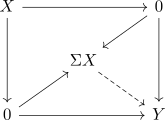
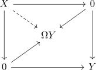

loop suspension adjunction for a pointed infinity category
Proposition
Let $\mathcal{C}$ be a pointed infinity category admitting (enough) fibers and cofibers Then the suspension functor is an infinity left adjoint to the loop functor
Proof
sketch
A map $\Sigma X \rightarrow Y$ corresponds to compatible homotopies for $X \rightarrow Y$

but similarly we may put $\Omega Y$ in the center and then a map $X \rightarrow \Omega Y$ corresponds to compatible homotopies $X \rightarrow Y$

coherent
and use mapping anima and suspension/loop space for a pointed category